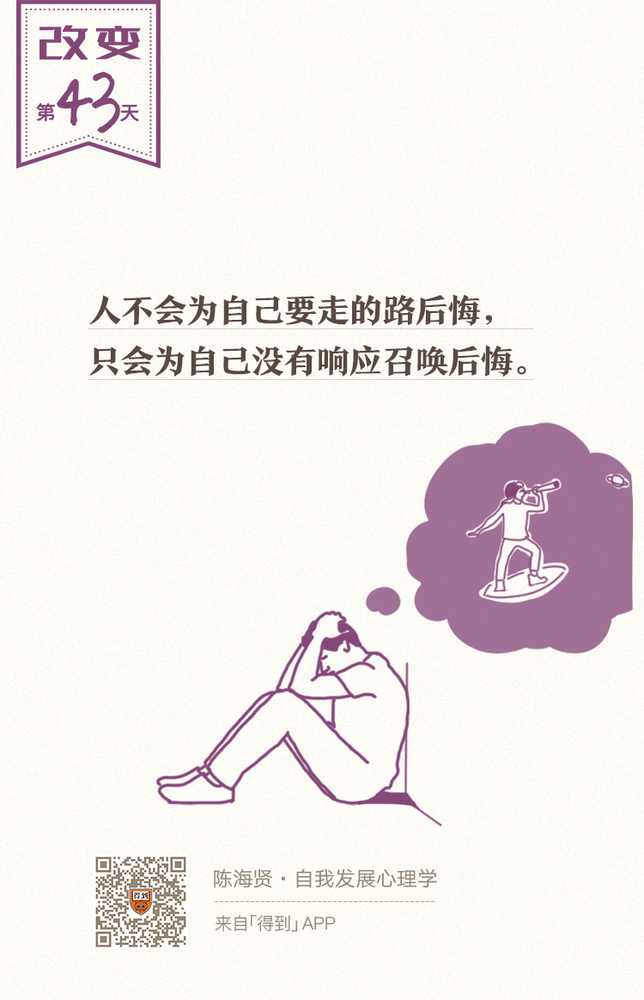

43丨英雄之旅：自我是如何进化的？

欢迎来到《自我发展心理学》。
你好，我是陈海贤。
上节课我们讲到，人是通过编织自己的故事，来应对艰难的时刻，完成转变的。
可是，在转变的迷茫期，我们并不知道自己的故事是怎么样的，而且，就算我们想自己编一个正能量的故事，激烈的消极情绪也很容易把我们带走，让我们相信，我们所经历的就是一个很糟糕的故事。
那有没有什么材料或者线索，能够帮助我们理解自己身上发生的事，帮助我们转变故事呢？
这就是我们今天要讲的——英雄故事。
虚假又真实的英雄故事
这听起来有些奇怪。虽然我们从小到大看了很多英雄故事，可是，这些故事不都是假的吗？
像哈利·波特这类故事虽然好看，但任何一个人成年人都不会把它当真啊。毕竟我们谁也不会指望弄个咒语来解决我们生活中的难题。既然故事是假的，那它怎么能帮到我们呢？
其实，这些故事既是假的，也是真的。
从剧情上，这些故事当然是虚构的。可是另一方面，当我们看到哈利·波特从一无所知的邻家小男孩，成长为高明的魔法师；从处处被保护的孩子，成长为能够战胜强敌的领袖时，我们知道，这些转变的过程是真实的。
人是用故事思考的动物，所以我们也从故事中学习转变的历程。
英雄冒险的故事就很特别。研究神话的学者坎贝尔（Joseph·Campbell）有一段时间就在世界各地搜集各类英雄故事。
他发现，无论是非洲的部落、亚洲的寺庙，还是现代的都市，大家讲的英雄故事，都有相似的内核，那就是转变。于是他就写了一本书，叫《千面英雄》。
在这本书里，他讲了英雄需要经历的三个阶段：启程、启蒙和回归。这三个阶段，正对应了人生重要转折的心理历程。
现在，我想把这三个阶段放到我们日常的生活中，来理解它们是怎么发生的。
英雄故事的三个阶段
第一个阶段，是启程。
在英雄故事的最开始，你会听到一些召唤，就像你在工作或关系中觉得疲惫时，偶尔在心里升起的关于改变的念头。
这些召唤在提醒你，某些重要的东西正在你的心里消失，某种已有的力量正在衰退，或者某一些伤痛需要疗愈。
而在故事的开始，你对这些召唤是陌生的，甚至是排斥的。因为这些召唤挑战了你对日常生活的假设，也挑战了你对自己的认知。
你会把这个召唤当做偶尔的异想天开，想要忘掉它们。可是，这些召唤却总是在你心里挥之不去的，好像在提醒你该有的宿命一样。
慢慢的，你不再抗拒这个召唤了，而开始认真地考虑它。虽然这个召唤通常意味着巨大的变动、麻烦和危险。
最终，你克服了对变化的恐惧，决定顺应这些召唤，勇敢上路，你投入了这个召唤。
从投入召唤开始，你就进入了故事的第二个阶段：启蒙。
如果启程的阶段意味着你从日常的生活中离开，启蒙的阶段则是你在一个超自然的世界中冒险，并获得成长的过程。
从决定走上这段冒险之旅开始，你就跨越了一个神秘的门槛。你以前所在的世界消失了，而你面对的，是一片充满未知、危险和希望的全新的领域。
跨越这道门槛，意味着你已经走出了自己的心理舒适区。困难、挑战、痛苦、危险，未知和巨大的不确定性，都纷纷到来。
你会发现，你原来的思维模式和行为习惯在这个新世界都派不上用场了。你必须学习新的思维和习惯模式。
同时，跨越门槛也意味着，就算你想回去，你也回不到原来的地方了。你必须勇往直前，去寻找出路。
幸运的是，在这段旅程中，一般你都会找到一个特别的守护者。
所有的英雄故事，比如《魔戒》《哈利·波特》或者“漫威”这样的屏幕英雄，主人公都会有一个指点和保佑他的守护者。
你的旅程也是。
这个守护者也许是能在情感上支持你，也许能给你提供你不知道的知识和技能，也许了解你要走的旅程。
有时候，守护者是一个现实中的人，有时候守护者可能只是一个你敬仰的榜样，一个神话里的人，甚至可能是一本书或者一个课程。当然，你的旅程仍然是你自己的，没有人能帮你走。
可是，这些守护者能让你更理解自己身上发生的事，更理解你自己的使命是什么。而你，也需要建立起跟守护者的联系，能够感觉到他们的存在，才会在你的旅程中，走得更加坚定。
在积累了这些能量以后，你就要开始面对故事的反派，你命中注定的敌人——恶魔。在很多英雄故事里，英雄并不是要战胜或者消灭这些恶魔，而是要转化他们。
坎贝尔说，最初你认为这些恶魔是在你外部的，与你做对的敌人。
比如你不顺利的工作，不顺心的老板，总是打游戏不理你的丈夫。可是慢慢你发现，问题并不在外面，而是来自你的内心。
恶魔最终只是一股既不好，也不坏的力量。是我们自己的贪心、傲慢、恐惧和胆怯，是我们头脑中太多的应该思维，映射在他们身上，把他们变成了恶魔。
而与恶魔的战斗，就是为了让我们看清自己的弱点，并让我们意识到，不是他们有问题，而是我们和他们的关系出现了问题。
当我们意识到这一点的时候，恶魔就不再是恶魔了，而变成了我们能够利用的能量。
如果你在和恶魔的斗争中，战胜了自我，那你就会发展出新的自我，新的资源，学习到了新的技能，新的思考方式，最终，你会收获信心和智慧，不再是那个刚跨过门槛，慌慌张张的少年了。
这个阶段充满了挣扎、奉献和斗争。它引导我们去创造新的认知，新的资源。
这个过程可能很艰难也很漫长。可是在这个过程中，我们所收获的东西，是我们根本没法预料的。
在跟恶魔的斗争中，自我跃升到了一个新的层次。可以说，这时候的你，变成了一个全新的你。
于是英雄故事到了第三个阶段：回归。
在这个阶段，英雄完成了他自己的使命。他要回到自己出发的地方，把他在旅程中学到的东西分享给那些等待出发的人。如果别人愿意，他也会在别人的旅程里，变成一个新的守护者。
让我再重复一遍。坎贝尔说，英雄之旅有三个阶段：启程、启蒙和回归。
具体来说，它是一个包括了听到召唤、投入召唤、跨越门槛、寻找守护者、面对和转化恶魔、发展内在的自我、蜕变、带着礼物回家这样的旅程。
英雄之旅：自我发现的旅程
现在，想想你自己曾经经历过的转变，或者想想你现在正在经历的转变，和这个英雄之旅的故事像吗？
英雄之旅讲的就是我们每个人面对转变的心理历程。这才是我们这么热爱这些英雄故事的原因。
原来，这些形态各异的虚幻故事里，有我们想要的真实。就像离开原始部落的青年，在最迷茫的时候，需要唱部族长老传授的圣歌，原来英雄故事，一直在提示我们会经历的转变。
故事是一个中介，它告诉我们会经历什么样的转变，现在正处于什么样的阶段，最终会往哪个方向走。
通过这些英雄故事，我们把我们自己的经历和历史文化传统联系在一起，把我们自己的人生和那些曾经走过这条路的英雄们联系在一起。
我们每个人都在从这样的英雄故事里吸取力量，又用自己的独特旅程给这些英雄故事增加新的力量和素材。正是这样，这些故事才获得了一种文化上的真实。
英雄故事的本质，不是战斗，也不是英勇的行为，而是我们每个人都会经历的自我转变和自我发现的旅程。只不过有时候我们太把它们当做故事，才没有听到这些故事想告诉我们的东西是什么。
对我自己而言，坎贝尔的英雄之旅也有一些特别的意义。
那时候，我刚从浙大辞职，放弃了唾手可得的大房子。
一方面，我很焦虑，也很迷茫，不知道这样的事情为什么会发生，以为自己犯了大错。另一方面，我又觉得，发生在我身上的事情是很重要的。
是坎贝尔的英雄之旅的故事，帮我发现了这段旅程的意义。
我这么说并不是说自己是英雄。实际上，英雄之旅的故事里，所谓的英雄都只是一些接受生命召唤，到不平凡的境遇里的普通人。
更何况，我这么做是为了我自己，这里面并没有什么英雄故事里常有的牺牲的内涵。
从那以后，经常有人来问我关于选择的问题。也有人问我，你后悔吗？
在我刚刚经历跨越门槛阶段的时候，这样的问题让我有些痛苦。可是现在，我可以很坦然地说：
其实，路具体往哪里走，不是最重要的。
- 我是从体制内出来，变成了自由职业者；
- 还有些人在体制内，辛苦地找他自己的位置；
- 有些人坚持了自己一开始就在的职业道路，有些人则进行了艰难的转行；
- 有些人克服了对亲密关系的恐惧结婚了，有些人则离开了一段不适合自己的关系。
没有什么路是一定的，重要的是，我们在借着走这些路，修炼我们自己，发现我们自己。就像坎贝尔说的，所有这些英雄之旅，说到底，就是一个自我发现的旅程。
讲到这里，我们转折期这个单元就结束了。
简单回忆一下，这个单元里，我们先讲了转折期的三个不同阶段：
- 结束；
- 迷茫；
- 重生。
之后讲了对自我发展影响最重要的三种转折：
- 工作的转折；
- 关系的转折；
- 创伤后的转折。
最后，讲到了如何在转变中发展出我们自己的人生故事，以及一种特定的故事——英雄故事。
下一单元，我们会把视野放得更广一些。我们会从整个人生发展的角度，来探讨我们将要走的这段英雄之旅。
我们下节课见。
